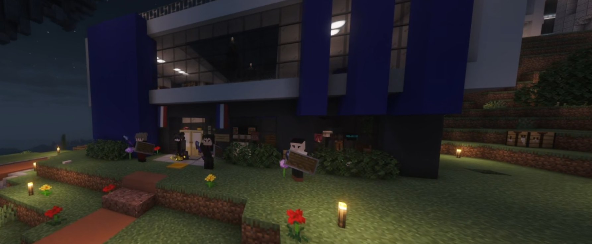

Convocation du président au commissariat : une rencontre sous haute tension
Bien avant la manifestation qui a secoué le commissariat, le président a été convoqué par Henri en présence d'un groupe énigmatique en manteaux noirs. Une scène brève, tendue, et soigneusement tenue à l'écart des regards.

Bien avant la manifestation qui a secoué le commissariat, un autre événement a discrètement mis le territoire en alerte : le président a été convoqué par Henri au commissariat, en présence d'un groupe énigmatique. Une scène brève, tendue, et soigneusement tenue à l'écart des regards, qui laisse derrière elle plus de questions que de réponses.
Une convocation sous surveillance
D'après les éléments recueillis sur place, le président s'est rendu au commissariat accompagné d'un groupe inconnu vêtus de longs manteaux noirs pour une réunion avec Henri. Impossible d'obtenir davantage d'informations : des gardes empêchaient de s'approcher du bâtiment, rendant toute observation directe impossible. L'échange s'est donc déroulé dans un strict périmètre de sécurité, sous haute confidentialité.
Ce que l'on sait — et ce que l'on ignore
À ce stade, aucune précision n'a filtré sur le contenu de la discussion. Était-ce une simple convocation administrative ? Un échange au sujet des enquêtes en cours ? Une mise au point institutionnelle après les récents événements ? Rien n'a pu être confirmé. Le silence qui a entouré cette rencontre ne fait qu'alimenter les spéculations.
Le plus notable reste sans doute la présence conjointe du président et de ce mystérieux groupe, signe que l'affaire dépassait probablement le cadre d'une simple entrevue ordinaire.
Direction le parlement
À l'issue de cette convocation, tous les participants sont ensuite partis pour une réunion au parlement. Là encore, impossible pour notre rédaction de les suivre jusque dans la salle. Cette seconde phase de l'événement, tout aussi opaque que la première, laisse penser qu'une série de décisions importantes a pu être engagée loin des caméras et des témoins.
"Quand le pouvoir se réunit à huis clos, le peuple finit toujours par vouloir savoir."
— La Rédaction
Le Karmine Déchaîné garde un œil attentif sur cette séquence, d'autant qu'elle s'inscrit dans une période déjà marquée par de fortes tensions entre institutions, police et citoyens.